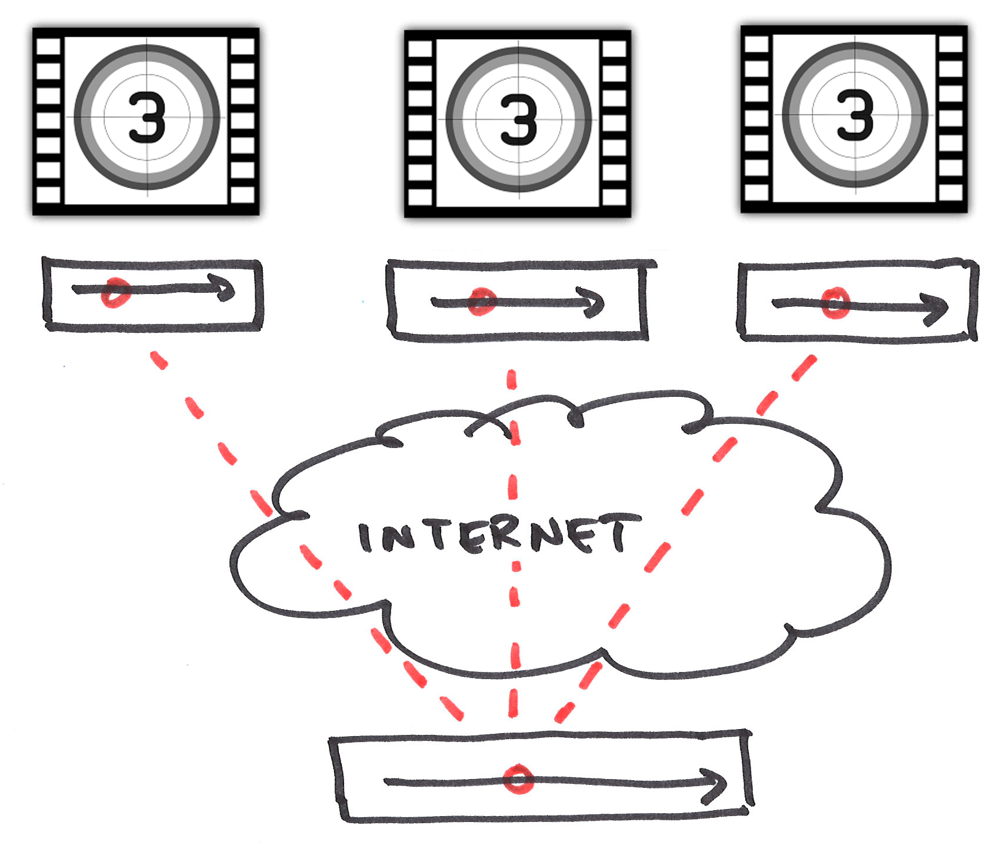

Timing Objects

- red circle moves along timeaxis --- (position, velocity)
- play, pause, jump, fast-forward --- modify (position, velocity)
- common representation of media control --- independent from media and purpose
Multi-media frameworks always built around similar concepts. No such object in JS context...


Social viewing
